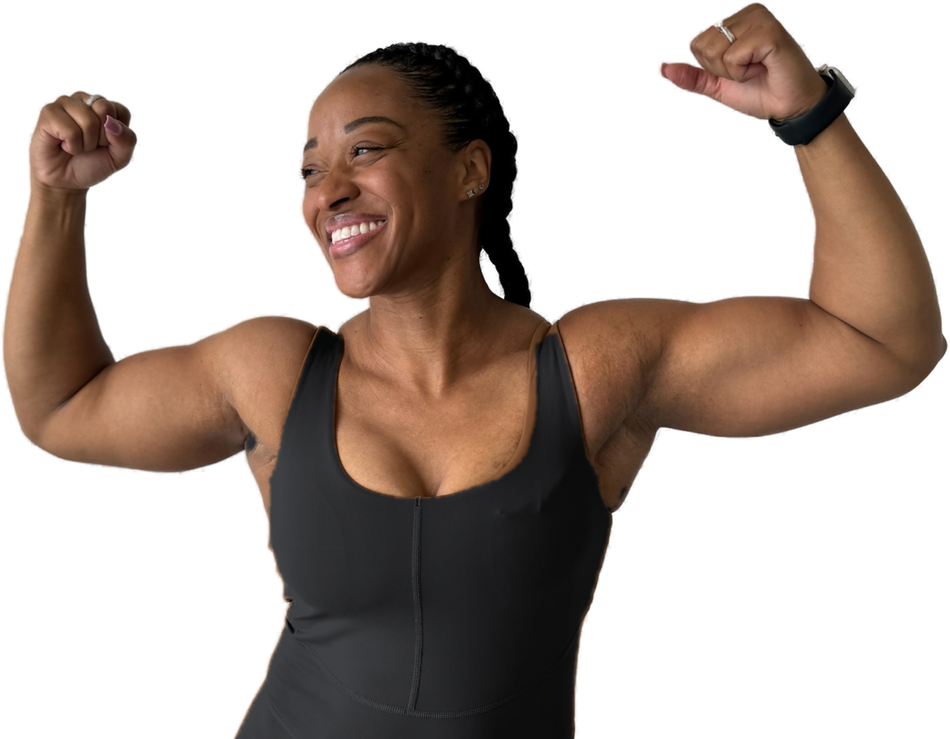
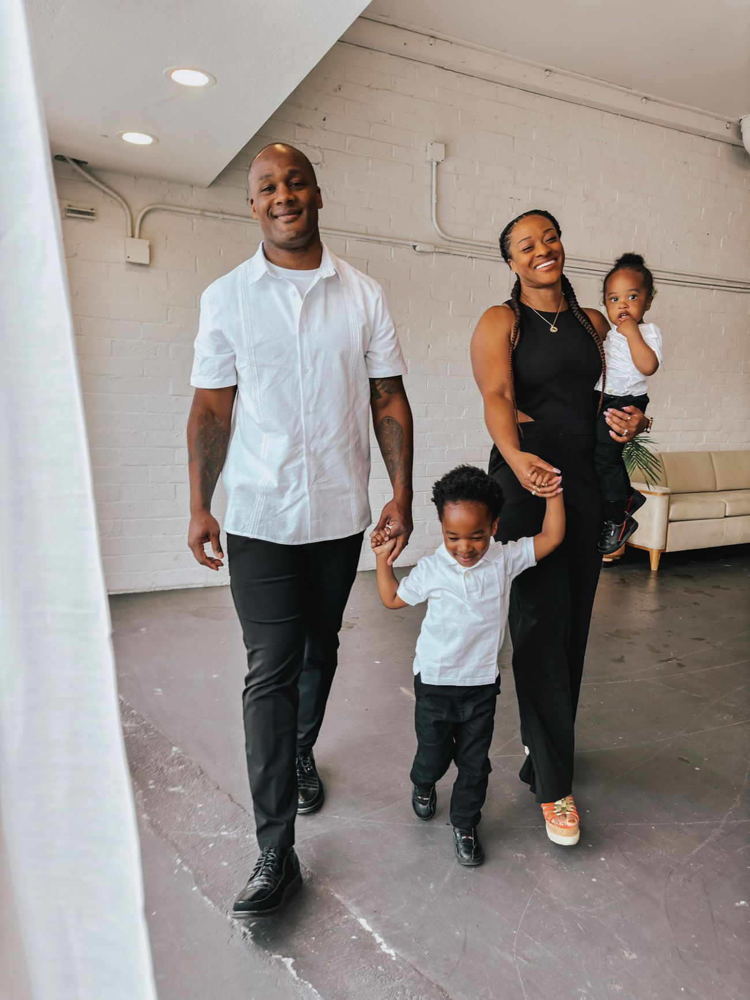
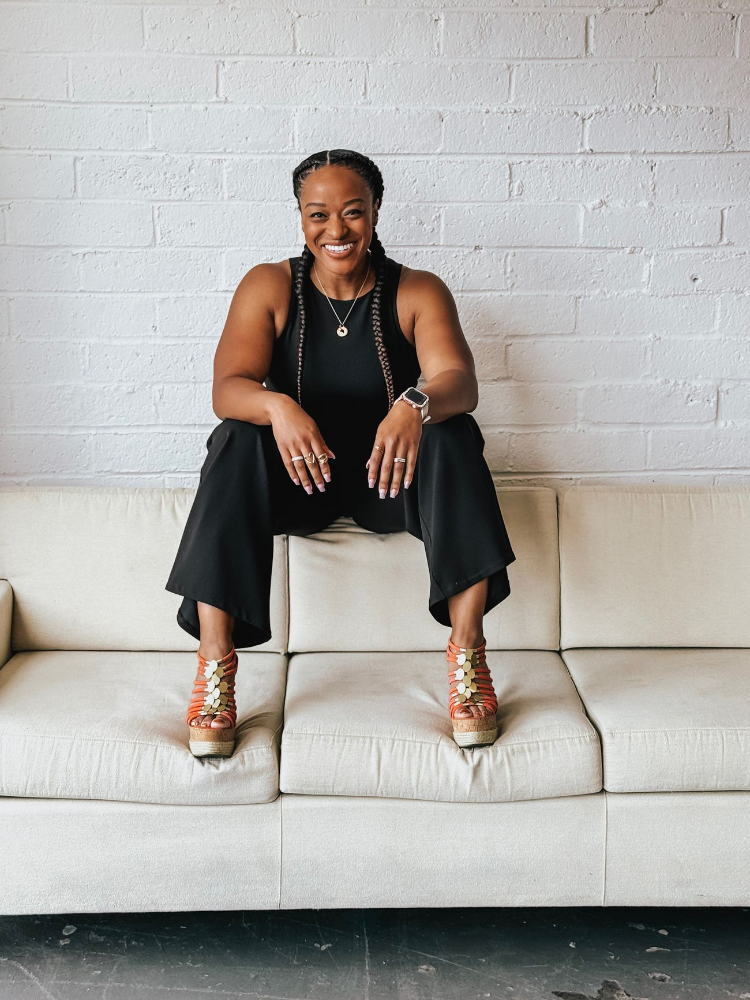

Reinvent What
Strong Looks Like.
You’ve spent years trying to improve yourself, stay disciplined, keep up, and become the version of yourself you think you should be.
Maybe the focus has been your body. Maybe it has been your confidence, your habits, your identity, or simply trying to feel like yourself again.
But lasting transformation is not just about changing what people can see.
Ashley helps women renew their minds, transform their bodies, and redefine their lives so they can become stronger from the inside out.

Feel like yourself again
Stop trying to recover an old version of you and understand who you are becoming.
Trust yourself again
Build the confidence to make decisions without constantly second-guessing yourself.
Build a body that supports your life
Pursue strength, health, and physical goals without making your body your identity.
Make room for what is next
Create a life that reflects your priorities, your values, and the woman you are becoming.
You’re doing all the things. So why don’t you feel like yourself?
You are capable. Responsible. Used to handling a lot.
You take care of the people you love. You show up. You work. You exercise. You try to eat well.
You keep telling yourself you should be more disciplined, more grateful, more consistent, more together.
And yet something still feels off.
Your body has changed. Your life has changed. Motherhood has changed you. The things that used to work do not always fit the woman you are now.
And somewhere along the way, your confidence, identity, appearance, expectations, and sense of self became tangled together.
You do not need another plan for fixing yourself.
You need the space and tools to understand what is actually keeping you stuck.
Stop searching outward for what has to change inward.
The Reinvention Method
The Reinvention Method is Ashley’s whole-person approach to transformation. It recognizes that lasting change doesn’t happen by focusing on your body while ignoring your mind, your identity, your habits, and the life you’re actually living.
The work moves from the inside out.
Renew Your Mind
Before we change what you do, we look at what you believe. Because a different body cannot free you from a belief that was never created by your body in the first place.
Transform Your Body
Build strength, energy, health, and sustainable habits without asking your body to carry the weight of your identity.
Redefine Your Life
Decide how you want to live now that appearance, achievement, expectations, and old versions of you no longer get to make every decision.
What’s Keeping You From Feeling Like Yourself Again?
A short quiz for the woman who is doing all the things and still does not feel like herself.
You do not need another list of things to fix. You need clarity about where to begin.
Take the quiz to discover which area of your transformation needs your attention first.

I didn’t learn reinvention from a textbook. I lived it.
I know what it feels like to have your identity connected to performance, appearance, achievement, and the version of yourself everyone else sees.
I’ve been the dancer. The performer. The fitness professional. The entrepreneur. The wife. The mother. The woman whose body changed and whose life changed with it.
And I learned something along the way: strength is bigger than muscle.
Real transformation happens when you stop trying to recover an old version of yourself and begin discovering who you are becoming in this season.
Today, I help women do that work mentally, physically, emotionally, and spiritually.
Fitness is one doorway. The body is one piece. But the woman is the work.
Transformation that goes deeper than the scale.
Ashley’s coaching combines body transformation with the deeper work required to create sustainable change.
- Strength + fitness strategy
- Nutrition guidance
- Mindset coaching
- Body image + identity work
- Habits
- Accountability
- Whole-person wellness
- Purpose + life integration

Conversations that challenge women to rethink strength.
Ashley Perry Lambert is a transformation coach, speaker, and podcast host who helps women rethink the relationship between their bodies, identity, health, confidence, and purpose.
Her teaching is practical, honest, encouraging, and rooted in the belief that women were created for more than constantly fixing themselves.
The change goes deeper than what you see.
Ashley’s clients often come looking for physical results. What they discover is confidence, awareness, strength, healthier patterns, and a different relationship with themselves.
Ashley really opens your eyes in a way that helps you see inside first. I felt for the first time the freedom to find the new version of me and stop trying to find the old version. I also learned how to be confident and own my choices in a way that didn’t make me feel shame.
This program opened my eyes to the importance of protein in my diet, drinking lots of water, and having balanced physical, mental, spiritual and emotional awareness and actions as keys to overall health success.
This program gave me my confidence back. After having a baby and nursing I struggled with losing weight. Nothing I tried seemed to work. Ashley’s program helped me learn sustainable ways to eat and workout. I began prioritizing myself and learned how to work on my goals while at the same time still being a mom and wife.
I lost 20 of the 30 pounds I gained and that extra 10 pounds is pure muscle. I am much stronger and physically capable than I’ve ever been! Ashley also spent time with me to figure a nutrition plan that helped boost my results! Ashley is fantastic! She is the best part and wonderful to work with. She listens to your needs and gives great techniques that you can take with you.
Reinvented with Ashley Perry Lambert

Honest conversations about renewing your mind, transforming your body, and redefining your life. For moms 30 to 45 who are tired of believing the next change to their body, schedule, circumstances, or accomplishments will finally make them feel like themselves again.
As Ashley’s brand expands, the podcast will continue becoming a place for conversations about not only transforming the body, but transforming the woman.
Start Here
You do not have to change everything overnight. Start with one resource that helps you understand where you are and what your next step could be.
Identity / Reinvention Resource
A guide for the woman rebuilding how she sees herself.
Notify meBefore you reach out.
Is Ashley only a fitness coach?
I’m not sure which kind of support I need. Where should I start?
What is 16-Week Transformation Coaching?
What is Reinvented Collective?
Do I have to be a Christian to work with Ashley?
Ready to stop trying to become who you used to be?
Build strength for the woman you are becoming.